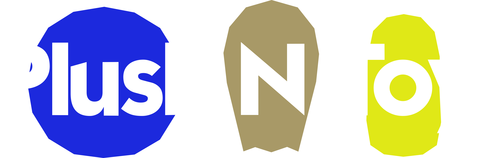

PlushNToy
PlushNToy est un projet ambitieux de framework développé sous Unreal Engine. L'objectif à terme est de publier au moins une mise à jour majeure chaque année, permettant au jeu de base d'évoluer progressivement pour devenir de plus en plus complet.
Le projet puise son inspiration originelle dans les aventures imaginaires que je partageais avec mes sœurs durant notre enfance. Pour autant, aucun personnage de nos jeux d'époque n'a réellement fait son apparition dans les titres : ce sont avant tout les décors et les mondes qui ont été recréés, comme la chambre d'enfant dans Platroomer ou le monde céleste dans Cloud Trials.
Après plusieurs reboots internes, j'ai pris la décision de repartir une nouvelle fois de zéro sur Unreal Engine. J'ai choisi comme socle l'idée d'un jeu de survie, d'exploration et d'aventure : c'est un genre vaste et riche en libertés, parfait pour poser des fondations solides et construire dessus au fil du temps.
Désormais, les prochains jeux conçus sous PlushNToy ne seront plus des projets séparés, mais directement intégrés au jeu de base comme un hub central, selon le principe : un jeu = un monde. Cette approche permet de faire progresser le framework lui-même, de faire évoluer l'expérience globale pour les nouveaux joueurs et de synchroniser la progression entre les différents mondes.
Aujourd'hui, le jeu officiel PlushNToy est disponible en version stable, et de futures mises à jour arrivent très bientôt !
Jeux de l'univers PlushNToy


Changelog du projet
Version 1.0 [14/10/2026]
Nouvelle Ère (Survival Open-World & Hub)
- Reboot complet du projet sous Unreal Engine avec architecture de framework pérenne.
- Lancement officiel du jeu PlushNToy en version stable sur Windows et Linux.
- Mise en place de la structure Hub central : chaque futur jeu sera intégré sous forme d'un monde connectable.
- Système de synchronisation de la progression entre les univers.
- Intégration de la menace de la pâte à modeler et mécanique de craft/construction.
Version Test 07012024 [07/01/2024]
Monde Céleste (Cloud Trials)
- Développement de Cloud Trials comme démonstrateur technologique.
- Intégration d'un HUB central pour la navigation entre les niveaux.
- Mise en place du mode coopération locale.
- Amélioration significative du level design et des shaders d'environnement.
Version Test 27012023 [27/01/2023]
La Chambre (Platroomer)
- Toute première version du framework utilisée pour concevoir Platroomer.
- Pose des bases : système de plateforme, intégration des pouvoirs.
- Implémentation des systèmes fondamentaux : HUD dynamique et génération aléatoire de parcours.